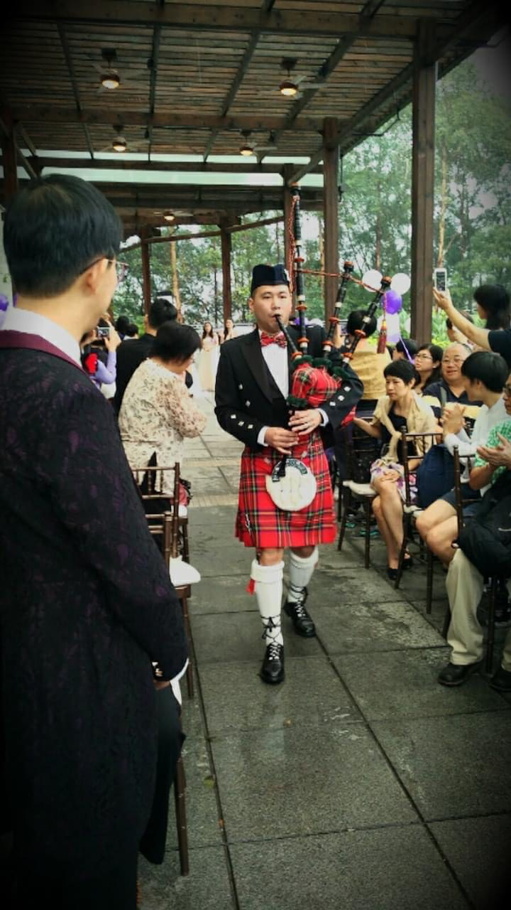
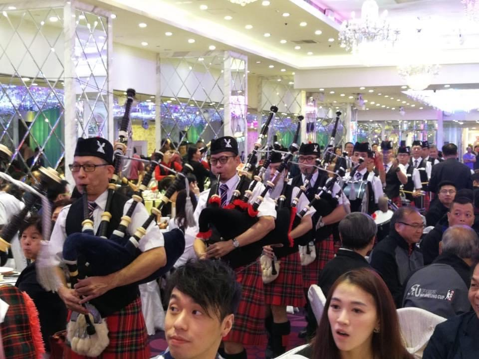

中/Eng
City of Hong Kong Pipe Band
香港城市風笛隊
香港城市風笛隊
Elevate your occasion with the City of Hong Kong Pipe Band's array of services, each designed to add a special note to your event:
Let the City of Hong Kong Pipe Band create the perfect soundtrack for your event. Choose from our range of service plans to match the scale and atmosphere you desire. Each plan is accompanied by a visual glimpse of what we offer, allowing you to envision the ambiance we can provide.
A lone piper stands, the echo of solitude in every note. A single melody weaves through the air, pure and unaccompanied, its haunting beauty resonating with the simplicity of a singular performance.
Double the melody, double the impact. Two pipers in harmony provide a fuller sound and a stirring presence.
Experience the rich layers of four pipers as they weave intricate musical patterns that captivate and enchant.
Our mini band option includes four pipers complemented by the resonant beats of two drummers. The perfect balance of melody and rhythm.

For a truly grand affair, the full band presents an impressive ensemble of pipers and drummers, tailored to the size of your event for maximum impact.
For more details on each plan and to discuss the specific requirements for your event, please contact us. We are excited to work with you to craft a memorable musical experience that perfectly suits your celebration.